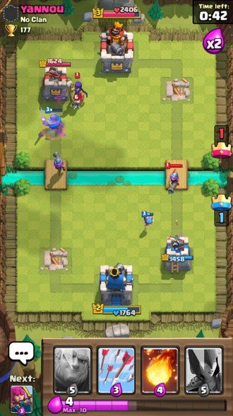

Clash Royale — відеогра для мобільних пристроїв жанру стратегії з елементами колекційної карткової гри в реальному часі. Доступна на платформах Android та iOS, випущена компанією Supercell. Clash Royale вийшла 2 березня 2016 року і відтоді періодично оновлюється. В цій грі двоє або четверо гравців борються між собою, намагаючись знищити базу супротивника з використанням колекційних карт і тактичного мислення.

Битва в Clash Royale
У Clash Royale двоє гравців борються між собою, намагаючись знищити базу супротивника та зберегти власну до вичерпання відведеного часу. Поле бою, зване ареною, поділене навпіл: знизу розташована територія гравця з трьома баштами й двома шляхами, зверху — аналогічні башти й шляхи противника. Гравець має колоду карт, з якої випадковим чином розкритими є чотири. Викладаючи карти на поле бою, він прикликає відповідні війська, зводить споруди чи чаклує закляття. Війська з'являються у вказаному місці за кілька секунд і автоматично вирушають по дорогах в атаку та нападають на найближчих ворогів. Але деякі війська йдуть прямо до ворожої башти не зважаючи ні на що. Споруди можуть продукувати підмогу, а закляття — давати миттєвий руйнівний чи корисний ефект. Використання карт обмежене запасом «еліксиру», який з часом поповнюється, та часом «перезарядки» розкритих карт після викладання попередньої. Максимум еліксиру у гравця може бути 10 одиниць. На базі встановлено три вежі: дві маленькі — з принцесами-лучницями, і одна велика — з королем, озброєним гарматою. Вежі принцес скорострільні, але мають менше міцності. Натомість вежа короля міцна, а її атаки повільні. З утратою вежі також зменшується підконтрольна територія, де можна прикликати війська та споруди. Коли до кінця бою залишається 60 секунд, еліксир виробляється вдвічі швидше (додатково сигналізується знаком x2). Якщо до вичерпання часу кількість веж у обох гравців однакова, присуджуються додаткові секунди, поки хтось не здобуде перевагу. За кожну знищену ворожу вежу видається корона. Здобуваючи перемоги та виконуючи глобальні завдання, гравець винагороджується скринями. Кожна скриня відкривається певний час, до кількох годин, або миттєво за самоцвіти. Всередині можуть міститися нові карти, вдосконалення наявних, чи ресурси: самоцвіти й золото. Коли карта отримує достатньо вдосконалень.ггравець може підвищити її рівень, заплативши золото. Підвищення рівня означає збільшення параметрів, наприклад воїн отримує більший запас здоров'я.
cилу атаки, збільшення частоти атак. Загальні успіхи виражаються в кубках (трофеях). Виграючи битви, гравець отримує їх, програючи — втрачає. В середньому гравець за бій виграє 30 кубків (трофеїв). Успішні дії, такі як перемоги, відкриття скринь, вдосконалення карт, виконаня завдань, збільшує досвід гравця. Лише набравши достатньо досвіду, він отримує змогу грати на нових аренах.Гравець може битися сам, або приєднатися до клану, що включає до 50 гравців. Виграючи бої на користь клану, його учасники змагаються в рейтинговій таблиці та отримують спільні винагороди. Пожертвування своїх карт клану дає досвід. Реплеї найкращих боїв можна переглянути в розділі меню «TV Royale».
Ігрова колода гравця — це 8 вибраних ним раніше карт, які постійно використовуються в бою. Змінити карти в колоді можна перед боєм. Карти випадають в поєдинку випадковим чином доти, поки бій не закінчиться. Кожна наступна з них має час «перезарядки» після використання попередньої, впродовж якого стає недоступною і забарвлюється в сірий колір. За ефектом карти поділяються на карти військ, споруд і заклять. Всі вони здатні діяти на визначений тип цілей: наземні війська, повітряні війська, наземні і повітряні, або на споруди. Крім того важливими характеристиками карти є швидкість її «перезарядки» та термін прикликання на поле бою. За рідкістю карти поділяються на 4 типи:
Всього в грі 84 карти. З них: 22 — звичайні, 23 — рідкісні, 24 — епічні, 15 — легендарні[2]. Колоди можливо формувати згідно улюбленої стратегії, або за переважним кольором, типом військ тощо[3].